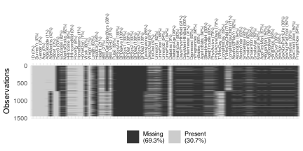

# A tibble: 6 × 76
ID SurveyYr Gender Age AgeDecade AgeMonths Race1 Race3 Education
<int> <fct> <fct> <int> <fct> <int> <fct> <fct> <fct>
1 51624 2009_10 male 34 " 30-39" 409 White <NA> High School
2 51624 2009_10 male 34 " 30-39" 409 White <NA> High School
3 51624 2009_10 male 34 " 30-39" 409 White <NA> High School
4 51625 2009_10 male 4 " 0-9" 49 Other <NA> <NA>
5 51630 2009_10 female 49 " 40-49" 596 White <NA> Some College
6 51638 2009_10 male 9 " 0-9" 115 White <NA> <NA>
# ℹ 67 more variables: MaritalStatus <fct>, HHIncome <fct>, HHIncomeMid <int>,
# Poverty <dbl>, HomeRooms <int>, HomeOwn <fct>, Work <fct>, Weight <dbl>,
# Length <dbl>, HeadCirc <dbl>, Height <dbl>, BMI <dbl>,
# BMICatUnder20yrs <fct>, BMI_WHO <fct>, Pulse <int>, BPSysAve <int>,
# BPDiaAve <int>, BPSys1 <int>, BPDia1 <int>, BPSys2 <int>, BPDia2 <int>,
# BPSys3 <int>, BPDia3 <int>, Testosterone <dbl>, DirectChol <dbl>,
# TotChol <dbl>, UrineVol1 <int>, UrineFlow1 <dbl>, UrineVol2 <int>, …Missing Data
DSCI 200
Katie Burak, Gabriela V. Cohen Freue
Last modified – 04 February 2026
\[ \DeclareMathOperator*{\argmin}{argmin} \DeclareMathOperator*{\argmax}{argmax} \DeclareMathOperator*{\minimize}{minimize} \DeclareMathOperator*{\maximize}{maximize} \DeclareMathOperator*{\find}{find} \DeclareMathOperator{\st}{subject\,\,to} \newcommand{\E}{E} \newcommand{\Expect}[1]{\E\left[ #1 \right]} \newcommand{\Var}[1]{\mathrm{Var}\left[ #1 \right]} \newcommand{\Cov}[2]{\mathrm{Cov}\left[#1,\ #2\right]} \newcommand{\given}{\ \vert\ } \newcommand{\X}{\mathbf{X}} \newcommand{\x}{\mathbf{x}} \newcommand{\y}{\mathbf{y}} \newcommand{\P}{\mathcal{P}} \newcommand{\R}{\mathbb{R}} \newcommand{\norm}[1]{\left\lVert #1 \right\rVert} \newcommand{\snorm}[1]{\lVert #1 \rVert} \newcommand{\tr}[1]{\mbox{tr}(#1)} \newcommand{\brt}{\widehat{\beta}^R_{s}} \newcommand{\brl}{\widehat{\beta}^R_{\lambda}} \newcommand{\bls}{\widehat{\beta}_{ols}} \newcommand{\blt}{\widehat{\beta}^L_{s}} \newcommand{\bll}{\widehat{\beta}^L_{\lambda}} \newcommand{\U}{\mathbf{U}} \newcommand{\D}{\mathbf{D}} \newcommand{\V}{\mathbf{V}} \]
Attribution
This material is based on content from the following sources:
Learning Objectives
- Determine potential reasons why data are missing.
- Define data missing mechanisms.
- Detect instances of missing observations in a data set using a computer script and visualization.
- Reflect on the consequences with regards to different ways of handling missing data.
- Recognize the importance of utilizing domain knowledge when handling missing data.
The Mystery of Missing Data

- Is any data missing?
- If so, is there a reason some observations are missing?
- How serious is the problem?
- What can we do about it?
Examples
Missing data is common in many fields, for example,
Business: missing values may appear in customer surveys, customer profiles, sales records, and inventories.
Healthcare: missing data is common in patient history records, demographics, and clinical variables.
Social Sciences: missing data usually appears in large-scale surveys and administrative records.
Environmental Sciences: missing data frequently occurs in weather station records, air and water quality datasets.
the underlying reasons can differ substantially …


NHANES Data: personal fitness questionnaire (PFQ), number of prescription drugs taken (RXD), vision questionnaire (VIQ), blood pressure measurement (BPX), lab measurements (LB) and miscellaneous (Misc). From Pridham et al., GeroScience 2022.
Not Engaging with Missing Data

Complete-case analysis drops observations with missing values and uses only complete observations, which can result in
- substantial bias in estimation
- misrepresentation of the population
- distort the relation between variables
- loss of important information
- misleading conclusions
Warning
Many functions in R uses complete data as a default with na.omit = TRUE or na.rm = TRUE
Can Missing Data Tell Us Something?
iClicker 1: exploring missingness
Looking at the COVID-19 map showing percentages of reported cases with missing race/ethnicity data per county. Which statement best describes the missingness?
A. The missing values look randomly scattered
B. The missing values show geographic patterns
C. The missing values are too small to matter
D. There is not enough information to tell
iClicker 2: is missingness informative?
Based on the COVID-19 map, which is the most plausible explanation for why race/ethnicity data are missing in some counties?
A. Random data entry errors
B. Differences in reporting practices or infrastructure
C. The disease affects some races less
D. Pure chance
iClicker 3: consequences of excluding missing data
Suppose we exclude all observations with missing lab measurements (LB) in the NHANES data. What is the most likely consequence?
A. The sample will better represent the population
B. Older adults will be under-represented
C. Estimates of health outcomes will be unbiased
D. Nothing important will change
Why Are Data Missing?
Missing Data Mechanisms
The choice of methods to handle missing data and the validity of subsequent statistical analyses depends strongly on why the data are missing.
Missing Completely at Random (MCAR): as the name suggests, missingness is unrelated to any values, either observed in the dataset or unobserved.
Missing at Random (MAR): missingness is related to observed data, making it easier to explain and handle.
Missing Not at Random (MNAR): missingness is related to unobserved data or the missing values themselves, thus extremely challenging to address.
Key takeaway
Missing data doesn’t just hide information, it can shape who we see and the relationships we infer!
Understanding why data are missing is essential
| Mechanism | Depends on | Implications | Example |
|---|---|---|---|
| MCAR | Neither observed nor missing values | Simplest to handle; complete-case analysis reduces sample size but does not add bias | Random sensor failure |
| MAR | Observed variables only | Complete-case analysis is usually biased; modelling missingness using observed data retains information and attenuates bias | NHANES lab tests missing due to age-based sampling |
| MNAR | Unobserved variables or the missing values | Missingness must be modeled explicitly; high risk of bias if ignored | Income not reported by high earners |
Table adapted from Advanced modeling and data challenges (Vol.3)
Implications of Ignoring the Missingness Mechanism
Understanding why the data are missing is essential to choose an appropriate method to handle it and draw valid conclusions from data:
complete-case analysis can fail when missingness is not truly random
MNAR cases are often associated with sensitive or personal data
ignoring or misshandling MNAR can introduce serious biases, such as underestimating poverty or mischaracterizing population health needs
misdiagnosing missingness can lead to misguided policy or resource allocation decisions
iClicker 4: Identifying MNAR
Which of the following is an example of a context of missing not at random (MNAR)?
A. Income is recorded only for a random subsample of respondents, selected independently of all characteristics.
B. Individuals with lower education levels may omit their education information.
C. Air-quality measurements from ground monitors are missing more often in winter months due to weather-related access issues.
D. Income is missing more often for individuals with temporary or informal employment, which is recorded in the data.
Visualising and Diagnosing Missingness
Even the first lines show that there are some missing values!
tibble [10,000 × 76] (S3: tbl_df/tbl/data.frame)
$ ID : int [1:10000] 51624 51624 51624 51625 51630 51638 51646 51647 51647 51647 ...
$ SurveyYr : Factor w/ 2 levels "2009_10","2011_12": 1 1 1 1 1 1 1 1 1 1 ...
$ Gender : Factor w/ 2 levels "female","male": 2 2 2 2 1 2 2 1 1 1 ...
$ Age : int [1:10000] 34 34 34 4 49 9 8 45 45 45 ...
$ AgeDecade : Factor w/ 8 levels " 0-9"," 10-19",..: 4 4 4 1 5 1 1 5 5 5 ...
$ AgeMonths : int [1:10000] 409 409 409 49 596 115 101 541 541 541 ...
$ Race1 : Factor w/ 5 levels "Black","Hispanic",..: 4 4 4 5 4 4 4 4 4 4 ...
$ Race3 : Factor w/ 6 levels "Asian","Black",..: NA NA NA NA NA NA NA NA NA NA ...
$ Education : Factor w/ 5 levels "8th Grade","9 - 11th Grade",..: 3 3 3 NA 4 NA NA 5 5 5 ...
$ MaritalStatus : Factor w/ 6 levels "Divorced","LivePartner",..: 3 3 3 NA 2 NA NA 3 3 3 ...
$ HHIncome : Factor w/ 12 levels " 0-4999"," 5000-9999",..: 6 6 6 5 7 11 9 11 11 11 ...
$ HHIncomeMid : int [1:10000] 30000 30000 30000 22500 40000 87500 60000 87500 87500 87500 ...
$ Poverty : num [1:10000] 1.36 1.36 1.36 1.07 1.91 1.84 2.33 5 5 5 ...
$ HomeRooms : int [1:10000] 6 6 6 9 5 6 7 6 6 6 ...
$ HomeOwn : Factor w/ 3 levels "Own","Rent","Other": 1 1 1 1 2 2 1 1 1 1 ...
$ Work : Factor w/ 3 levels "Looking","NotWorking",..: 2 2 2 NA 2 NA NA 3 3 3 ...
$ Weight : num [1:10000] 87.4 87.4 87.4 17 86.7 29.8 35.2 75.7 75.7 75.7 ...
$ Length : num [1:10000] NA NA NA NA NA NA NA NA NA NA ...
$ HeadCirc : num [1:10000] NA NA NA NA NA NA NA NA NA NA ...
$ Height : num [1:10000] 165 165 165 105 168 ...
$ BMI : num [1:10000] 32.2 32.2 32.2 15.3 30.6 ...
$ BMICatUnder20yrs: Factor w/ 4 levels "UnderWeight",..: NA NA NA NA NA NA NA NA NA NA ...
$ BMI_WHO : Factor w/ 4 levels "12.0_18.5","18.5_to_24.9",..: 4 4 4 1 4 1 2 3 3 3 ...
$ Pulse : int [1:10000] 70 70 70 NA 86 82 72 62 62 62 ...
$ BPSysAve : int [1:10000] 113 113 113 NA 112 86 107 118 118 118 ...
$ BPDiaAve : int [1:10000] 85 85 85 NA 75 47 37 64 64 64 ...
$ BPSys1 : int [1:10000] 114 114 114 NA 118 84 114 106 106 106 ...
$ BPDia1 : int [1:10000] 88 88 88 NA 82 50 46 62 62 62 ...
$ BPSys2 : int [1:10000] 114 114 114 NA 108 84 108 118 118 118 ...
$ BPDia2 : int [1:10000] 88 88 88 NA 74 50 36 68 68 68 ...
$ BPSys3 : int [1:10000] 112 112 112 NA 116 88 106 118 118 118 ...
$ BPDia3 : int [1:10000] 82 82 82 NA 76 44 38 60 60 60 ...
$ Testosterone : num [1:10000] NA NA NA NA NA NA NA NA NA NA ...
$ DirectChol : num [1:10000] 1.29 1.29 1.29 NA 1.16 1.34 1.55 2.12 2.12 2.12 ...
$ TotChol : num [1:10000] 3.49 3.49 3.49 NA 6.7 4.86 4.09 5.82 5.82 5.82 ...
$ UrineVol1 : int [1:10000] 352 352 352 NA 77 123 238 106 106 106 ...
$ UrineFlow1 : num [1:10000] NA NA NA NA 0.094 ...
$ UrineVol2 : int [1:10000] NA NA NA NA NA NA NA NA NA NA ...
$ UrineFlow2 : num [1:10000] NA NA NA NA NA NA NA NA NA NA ...
$ Diabetes : Factor w/ 2 levels "No","Yes": 1 1 1 1 1 1 1 1 1 1 ...
$ DiabetesAge : int [1:10000] NA NA NA NA NA NA NA NA NA NA ...
$ HealthGen : Factor w/ 5 levels "Excellent","Vgood",..: 3 3 3 NA 3 NA NA 2 2 2 ...
$ DaysPhysHlthBad : int [1:10000] 0 0 0 NA 0 NA NA 0 0 0 ...
$ DaysMentHlthBad : int [1:10000] 15 15 15 NA 10 NA NA 3 3 3 ...
$ LittleInterest : Factor w/ 3 levels "None","Several",..: 3 3 3 NA 2 NA NA 1 1 1 ...
$ Depressed : Factor w/ 3 levels "None","Several",..: 2 2 2 NA 2 NA NA 1 1 1 ...
$ nPregnancies : int [1:10000] NA NA NA NA 2 NA NA 1 1 1 ...
$ nBabies : int [1:10000] NA NA NA NA 2 NA NA NA NA NA ...
$ Age1stBaby : int [1:10000] NA NA NA NA 27 NA NA NA NA NA ...
$ SleepHrsNight : int [1:10000] 4 4 4 NA 8 NA NA 8 8 8 ...
$ SleepTrouble : Factor w/ 2 levels "No","Yes": 2 2 2 NA 2 NA NA 1 1 1 ...
$ PhysActive : Factor w/ 2 levels "No","Yes": 1 1 1 NA 1 NA NA 2 2 2 ...
$ PhysActiveDays : int [1:10000] NA NA NA NA NA NA NA 5 5 5 ...
$ TVHrsDay : Factor w/ 7 levels "0_hrs","0_to_1_hr",..: NA NA NA NA NA NA NA NA NA NA ...
$ CompHrsDay : Factor w/ 7 levels "0_hrs","0_to_1_hr",..: NA NA NA NA NA NA NA NA NA NA ...
$ TVHrsDayChild : int [1:10000] NA NA NA 4 NA 5 1 NA NA NA ...
$ CompHrsDayChild : int [1:10000] NA NA NA 1 NA 0 6 NA NA NA ...
$ Alcohol12PlusYr : Factor w/ 2 levels "No","Yes": 2 2 2 NA 2 NA NA 2 2 2 ...
$ AlcoholDay : int [1:10000] NA NA NA NA 2 NA NA 3 3 3 ...
$ AlcoholYear : int [1:10000] 0 0 0 NA 20 NA NA 52 52 52 ...
$ SmokeNow : Factor w/ 2 levels "No","Yes": 1 1 1 NA 2 NA NA NA NA NA ...
$ Smoke100 : Factor w/ 2 levels "No","Yes": 2 2 2 NA 2 NA NA 1 1 1 ...
$ Smoke100n : Factor w/ 2 levels "Non-Smoker","Smoker": 2 2 2 NA 2 NA NA 1 1 1 ...
$ SmokeAge : int [1:10000] 18 18 18 NA 38 NA NA NA NA NA ...
$ Marijuana : Factor w/ 2 levels "No","Yes": 2 2 2 NA 2 NA NA 2 2 2 ...
$ AgeFirstMarij : int [1:10000] 17 17 17 NA 18 NA NA 13 13 13 ...
$ RegularMarij : Factor w/ 2 levels "No","Yes": 1 1 1 NA 1 NA NA 1 1 1 ...
$ AgeRegMarij : int [1:10000] NA NA NA NA NA NA NA NA NA NA ...
$ HardDrugs : Factor w/ 2 levels "No","Yes": 2 2 2 NA 2 NA NA 1 1 1 ...
$ SexEver : Factor w/ 2 levels "No","Yes": 2 2 2 NA 2 NA NA 2 2 2 ...
$ SexAge : int [1:10000] 16 16 16 NA 12 NA NA 13 13 13 ...
$ SexNumPartnLife : int [1:10000] 8 8 8 NA 10 NA NA 20 20 20 ...
$ SexNumPartYear : int [1:10000] 1 1 1 NA 1 NA NA 0 0 0 ...
$ SameSex : Factor w/ 2 levels "No","Yes": 1 1 1 NA 2 NA NA 2 2 2 ...
$ SexOrientation : Factor w/ 3 levels "Bisexual","Heterosexual",..: 2 2 2 NA 2 NA NA 1 1 1 ...
$ PregnantNow : Factor w/ 3 levels "Yes","No","Unknown": NA NA NA NA NA NA NA NA NA NA ...The str() function gives additional information about the variables, but not about missingness
ID SurveyYr Gender Age AgeDecade
Min. :51624 2009_10:5000 female:5020 Min. : 0.00 40-49 :1398
1st Qu.:56904 2011_12:5000 male :4980 1st Qu.:17.00 0-9 :1391
Median :62160 Median :36.00 10-19 :1374
Mean :61945 Mean :36.74 20-29 :1356
3rd Qu.:67039 3rd Qu.:54.00 30-39 :1338
Max. :71915 Max. :80.00 (Other):2810
NA's : 333
AgeMonths Race1 Race3 Education
Min. : 0.0 Black :1197 Asian : 288 8th Grade : 451
1st Qu.:199.0 Hispanic: 610 Black : 589 9 - 11th Grade: 888
Median :418.0 Mexican :1015 Hispanic: 350 High School :1517
Mean :420.1 White :6372 Mexican : 480 Some College :2267
3rd Qu.:624.0 Other : 806 White :3135 College Grad :2098
Max. :959.0 Other : 158 NA's :2779
NA's :5038 NA's :5000
MaritalStatus HHIncome HHIncomeMid Poverty
Divorced : 707 more 99999 :2220 Min. : 2500 Min. :0.000
LivePartner : 560 75000-99999:1084 1st Qu.: 30000 1st Qu.:1.240
Married :3945 25000-34999: 958 Median : 50000 Median :2.700
NeverMarried:1380 35000-44999: 863 Mean : 57206 Mean :2.802
Separated : 183 45000-54999: 784 3rd Qu.: 87500 3rd Qu.:4.710
Widowed : 456 (Other) :3280 Max. :100000 Max. :5.000
NA's :2769 NA's : 811 NA's :811 NA's :726
HomeRooms HomeOwn Work Weight
Min. : 1.000 Own :6425 Looking : 311 Min. : 2.80
1st Qu.: 5.000 Rent :3287 NotWorking:2847 1st Qu.: 56.10
Median : 6.000 Other: 225 Working :4613 Median : 72.70
Mean : 6.249 NA's : 63 NA's :2229 Mean : 70.98
3rd Qu.: 8.000 3rd Qu.: 88.90
Max. :13.000 Max. :230.70
NA's :69 NA's :78
Length HeadCirc Height BMI
Min. : 47.10 Min. :34.20 Min. : 83.6 Min. :12.88
1st Qu.: 75.70 1st Qu.:39.58 1st Qu.:156.8 1st Qu.:21.58
Median : 87.00 Median :41.45 Median :166.0 Median :25.98
Mean : 85.02 Mean :41.18 Mean :161.9 Mean :26.66
3rd Qu.: 96.10 3rd Qu.:42.92 3rd Qu.:174.5 3rd Qu.:30.89
Max. :112.20 Max. :45.40 Max. :200.4 Max. :81.25
NA's :9457 NA's :9912 NA's :353 NA's :366
BMICatUnder20yrs BMI_WHO Pulse BPSysAve
UnderWeight: 55 12.0_18.5 :1277 Min. : 40.00 Min. : 76.0
NormWeight : 805 18.5_to_24.9:2911 1st Qu.: 64.00 1st Qu.:106.0
OverWeight : 193 25.0_to_29.9:2664 Median : 72.00 Median :116.0
Obese : 221 30.0_plus :2751 Mean : 73.56 Mean :118.2
NA's :8726 NA's : 397 3rd Qu.: 82.00 3rd Qu.:127.0
Max. :136.00 Max. :226.0
NA's :1437 NA's :1449
BPDiaAve BPSys1 BPDia1 BPSys2
Min. : 0.00 Min. : 72.0 Min. : 0.00 Min. : 76.0
1st Qu.: 61.00 1st Qu.:106.0 1st Qu.: 62.00 1st Qu.:106.0
Median : 69.00 Median :116.0 Median : 70.00 Median :116.0
Mean : 67.48 Mean :119.1 Mean : 68.28 Mean :118.5
3rd Qu.: 76.00 3rd Qu.:128.0 3rd Qu.: 76.00 3rd Qu.:128.0
Max. :116.00 Max. :232.0 Max. :118.00 Max. :226.0
NA's :1449 NA's :1763 NA's :1763 NA's :1647
BPDia2 BPSys3 BPDia3 Testosterone
Min. : 0.00 Min. : 76.0 Min. : 0.0 Min. : 0.25
1st Qu.: 60.00 1st Qu.:106.0 1st Qu.: 60.0 1st Qu.: 17.70
Median : 68.00 Median :116.0 Median : 68.0 Median : 43.82
Mean : 67.66 Mean :117.9 Mean : 67.3 Mean : 197.90
3rd Qu.: 76.00 3rd Qu.:126.0 3rd Qu.: 76.0 3rd Qu.: 362.41
Max. :118.00 Max. :226.0 Max. :116.0 Max. :1795.60
NA's :1647 NA's :1635 NA's :1635 NA's :5874
DirectChol TotChol UrineVol1 UrineFlow1
Min. :0.390 Min. : 1.530 Min. : 0.0 Min. : 0.0000
1st Qu.:1.090 1st Qu.: 4.110 1st Qu.: 50.0 1st Qu.: 0.4030
Median :1.290 Median : 4.780 Median : 94.0 Median : 0.6990
Mean :1.365 Mean : 4.879 Mean :118.5 Mean : 0.9793
3rd Qu.:1.580 3rd Qu.: 5.530 3rd Qu.:164.0 3rd Qu.: 1.2210
Max. :4.030 Max. :13.650 Max. :510.0 Max. :17.1670
NA's :1526 NA's :1526 NA's :987 NA's :1603
UrineVol2 UrineFlow2 Diabetes DiabetesAge HealthGen
Min. : 0.0 Min. : 0.000 No :9098 Min. : 1.00 Excellent: 878
1st Qu.: 52.0 1st Qu.: 0.475 Yes : 760 1st Qu.:40.00 Vgood :2508
Median : 95.0 Median : 0.760 NA's: 142 Median :50.00 Good :2956
Mean :119.7 Mean : 1.149 Mean :48.42 Fair :1010
3rd Qu.:171.8 3rd Qu.: 1.513 3rd Qu.:58.00 Poor : 187
Max. :409.0 Max. :13.692 Max. :80.00 NA's :2461
NA's :8522 NA's :8524 NA's :9371
DaysPhysHlthBad DaysMentHlthBad LittleInterest Depressed
Min. : 0.000 Min. : 0.000 None :5103 None :5246
1st Qu.: 0.000 1st Qu.: 0.000 Several:1130 Several:1009
Median : 0.000 Median : 0.000 Most : 434 Most : 418
Mean : 3.335 Mean : 4.126 NA's :3333 NA's :3327
3rd Qu.: 3.000 3rd Qu.: 4.000
Max. :30.000 Max. :30.000
NA's :2468 NA's :2466
nPregnancies nBabies Age1stBaby SleepHrsNight
Min. : 1.000 Min. : 0.000 Min. :14.00 Min. : 2.000
1st Qu.: 2.000 1st Qu.: 2.000 1st Qu.:19.00 1st Qu.: 6.000
Median : 3.000 Median : 2.000 Median :22.00 Median : 7.000
Mean : 3.027 Mean : 2.457 Mean :22.65 Mean : 6.928
3rd Qu.: 4.000 3rd Qu.: 3.000 3rd Qu.:26.00 3rd Qu.: 8.000
Max. :32.000 Max. :12.000 Max. :39.00 Max. :12.000
NA's :7396 NA's :7584 NA's :8116 NA's :2245
SleepTrouble PhysActive PhysActiveDays TVHrsDay CompHrsDay
No :5799 No :3677 Min. :1.000 2_hr :1275 0_to_1_hr:1409
Yes :1973 Yes :4649 1st Qu.:2.000 1_hr : 884 0_hrs :1073
NA's:2228 NA's:1674 Median :3.000 3_hr : 836 1_hr :1030
Mean :3.744 0_to_1_hr: 638 2_hr : 589
3rd Qu.:5.000 More_4_hr: 615 3_hr : 347
Max. :7.000 (Other) : 611 (Other) : 415
NA's :5337 NA's :5141 NA's :5137
TVHrsDayChild CompHrsDayChild Alcohol12PlusYr AlcoholDay
Min. :0.000 Min. :0.000 No :1368 Min. : 1.000
1st Qu.:1.000 1st Qu.:0.000 Yes :5212 1st Qu.: 1.000
Median :2.000 Median :1.000 NA's:3420 Median : 2.000
Mean :1.939 Mean :2.197 Mean : 2.914
3rd Qu.:3.000 3rd Qu.:6.000 3rd Qu.: 3.000
Max. :6.000 Max. :6.000 Max. :82.000
NA's :9347 NA's :9347 NA's :5086
AlcoholYear SmokeNow Smoke100 Smoke100n SmokeAge
Min. : 0.0 No :1745 No :4024 Non-Smoker:4024 Min. : 6.00
1st Qu.: 3.0 Yes :1466 Yes :3211 Smoker :3211 1st Qu.:15.00
Median : 24.0 NA's:6789 NA's:2765 NA's :2765 Median :17.00
Mean : 75.1 Mean :17.83
3rd Qu.:104.0 3rd Qu.:19.00
Max. :364.0 Max. :72.00
NA's :4078 NA's :6920
Marijuana AgeFirstMarij RegularMarij AgeRegMarij HardDrugs
No :2049 Min. : 1.00 No :3575 Min. : 5.00 No :4700
Yes :2892 1st Qu.:15.00 Yes :1366 1st Qu.:15.00 Yes :1065
NA's:5059 Median :16.00 NA's:5059 Median :17.00 NA's:4235
Mean :17.02 Mean :17.69
3rd Qu.:19.00 3rd Qu.:19.00
Max. :48.00 Max. :52.00
NA's :7109 NA's :8634
SexEver SexAge SexNumPartnLife SexNumPartYear SameSex
No : 223 Min. : 9.00 Min. : 0.00 Min. : 0.000 No :5353
Yes :5544 1st Qu.:15.00 1st Qu.: 2.00 1st Qu.: 1.000 Yes : 415
NA's:4233 Median :17.00 Median : 5.00 Median : 1.000 NA's:4232
Mean :17.43 Mean : 15.09 Mean : 1.342
3rd Qu.:19.00 3rd Qu.: 12.00 3rd Qu.: 1.000
Max. :50.00 Max. :2000.00 Max. :69.000
NA's :4460 NA's :4275 NA's :5072
SexOrientation PregnantNow
Bisexual : 119 Yes : 72
Heterosexual:4638 No :1573
Homosexual : 85 Unknown: 51
NA's :5158 NA's :8304
The summary() function gives only a count of missing values per variable, but not how missingness relates across variables
Plots can be especially useful for visualizing patterns and relationships in missingness
- Variable-wise summaries (
gg_miss_var): show missingness in each variable- helping identify which variables are most affected
- Heatmaps (
vis_miss): show where values are missing across observations and variables- useful for spotting structure, clustering, or blocks of missingness
- UpSet plots (
gg_miss_upset): show which combinations of variables tend to be missing together- revealing joint or structural missingness patterns.
- Missingness vs Covariates (
gg_miss_fct,geom_miss_point): show how missingness relates to observed variables- helping assess whether missingness may depend on observed data (MAR)
vis_dat() functions is useful to visualize the structure of the data and missingness

- the dataset has too many variables for these visualizations
- variable names become difficult to read
- the plot is still useful to have an overall idea of the amount of missingness per variables

naniarcreates a “shadow” matrix to store the missing data structure in a tidy format- useful to create visualizations and wrangle data


Look at subset of variables to understand missingness patterns
- Some variables are mutually exclusive by design
- Some variables are jointly missing, can be because of the design of the study too
When blood pressure is missing, what else is missing?
Diagnosing the Missingness Mechanism for BP
- BP missingness appears to be part of a larger missingness module
- some participants are missing an entire exam/measurements
- likely not MCAR
- can be MAR if the chance of being in that “missing block” is explainable by observed variables (e.g., age group, survey year, type of examination)
- can be MNAR if missingness depends on unobserved health status
- we can’t diagnose MNAR from this plot alone

SurveyYr doesn’t seem to explain the block missingness observed

Some variables are jointly missing but differing per age groups, suggesting MAR

Missingness in blood pressure is mostly related to age, suggesting MAR


Missing values of one variable in relation to the non-missing values of the other (red dots)
Summaries of missingness
per variable
# A tibble: 13 × 3
variable n_miss pct_miss
<chr> <int> <num>
1 BPSys1 1763 17.6
2 BPDia1 1763 17.6
3 BPSys2 1647 16.5
4 BPDia2 1647 16.5
5 BPSys3 1635 16.4
6 BPDia3 1635 16.4
7 BPSysAve 1449 14.5
8 BPDiaAve 1449 14.5
9 Pulse 1437 14.4
10 BMI 366 3.66
11 Height 353 3.53
12 AgeDecade 333 3.33
13 Weight 78 0.78per cases (rows)
Key Takeaways
Missing data do more than reduce sample size, they can distort who is represented and how variables are related
Diagnosing why data are missing is essential before choosing how to handle them
Complete-case analysis is a simple way to handle missingness but is unbiased only under MCAR and often fails otherwise
MNAR poses the greatest risk of bias when handled incorrectly
Visualization and diagnostics are critical tools for identifying missingness mechanisms
naniarintegrates missing-data summaries and visualizations into the tidyverse workflow using tidy data principles
Check additional functions in the Missing Book
UBC DSCI 200